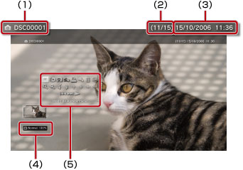

Fotografia > Utilizar o painel de controlo das opções
Utilizar o painel de controlo das opções
Realize várias operações utilizando o painel de controlo no ecrã. É possível visualizar ou ocultar o painel de controlo das opções, premindo o botão  .
.
Modo de Apresentação

Altera o tamanho da imagem visualizada no ecrã.
| Normal | Mostra a imagem de forma a ajustada ao ecrã sem alterar as proporções. |
|---|---|
| Zoom | Mostra a imagem em formato de ecrã total sem alterar as proporções. As partes da imagem nos cantos superior e inferior ou direito e esquerdo são cortadas. |
Nota
Dependendo do ficheiro de imagem, pode não ser possível alterar o modo de apresentação.
Alterar Efeito
Altera o método de mudar as imagens.
| Normal | Substitui a imagem actual pela próxima imagem. |
|---|---|
| Diapositivo | Substitui a imagem actual pela próxima imagem em formato de apresentação. |
| Dissipar | Para definir a utilização do efeito dissipar para passar à imagem seguinte. |
Recortar
Elimine as partes desnecessárias de uma imagem em cima, em baixo, à esquerda e à direita. Utilize as barras da esquerda e da direita do comando sem fios para seleccionar a área que pretende manter. Utilize o manípulo esquerdo para se movimentar em todas as direcções e utilize o manípulo direito para aumentar ou diminuir. As imagens recortadas são guardadas com um nome de ficheiro diferente.
Nota
Apenas as imagens armazenadas no disco rígido do sistema PS3™ podem ser recortadas.
Adicionar à lista de reprodução
Adicione uma imagem à lista de reprodução.
Nota
Só é possível adicionar à lista de reprodução as imagens guardadas no disco rígido.
Imprimir
Imprimir uma imagem utilizando uma impressora.
Nota
Para imprimir, deve primeiro configurar a impressora em [Selecção de Impressora] em  (Definições) >
(Definições) >  (Definições da Impressora).
(Definições da Impressora).
Definir como papel de parede
Defina a imagem apresentada no ecrã como papel de parede. A imagem é definida exactamente tal como aparece no ecrã, quer apareça aumentada, reduzida ou rodada.
Notas
- Quando não é utilizado papel de parede, ajuste a definição em (Definições) >
 (Definições de tema) > [Fundo de ecrã].
(Definições de tema) > [Fundo de ecrã]. - Apenas uma imagem pode ser definida como papel de parede num determinado momento. Se for seleccionada outra imagem, a imagem actual será substituída.
Eliminar
Elimine imagens.
Nota
Só é possível eliminar as imagens guardadas no disco rígido.
Apresentar
Apresenta informações sobre uma imagem. Sempre que prime o botão  , a imagem alterna entre o ecrã com informações Exif, o ecrã com uma barra de informações e o ecrã sem informações adicionais.
, a imagem alterna entre o ecrã com informações Exif, o ecrã com uma barra de informações e o ecrã sem informações adicionais.
Um ecrã com uma barra de informações

(1) |
Nome da imagem |
|---|---|
(2) |
Número da imagem / número total de imagens |
(3) |
Data e hora de gravação |
(4) |
Ícone do estado |
(5) |
Painel de Controlo |
Zoom In (Ampliar) / Zoom Out (Reduzir)

Utilize zoom in (ampliar) ou zoom out (reduzir) para aumentar ou diminuir uma imagem. Pode utilizar o manípulo esquerdo do comando sem fios para navegar em qualquer direcção e o manípulo direito para fazer zoom in (ampliar) ou zoom out (reduzir).
Rodar para a Esquerda / Rodar para a Direita
Roda a imagem 90 graus para a esquerda ou para a direita.
Para Cima / Para Baixo / Esquerda / Direita
Move a imagem para apresentar partes ocultadas como quando o (Modo de Apresentação) está definido para [Zoom].
Anterior / Seguinte
Apresenta a imagem anterior ou seguinte.
Apresentação
Mostra automaticamente cada imagem por ordem.